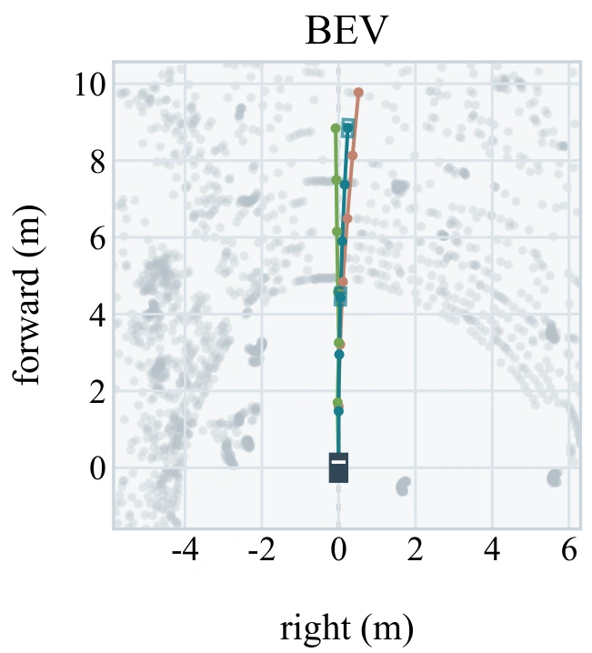

Align with motion
Reconcile the retained speed–curvature actions with the measured vehicle state.
VISION–LANGUAGE–ACTION · OFF-ROAD AUTONOMY
Fast Vision-Language-Action Execution
for Off-Road Autonomous Driving
† Corresponding author
lower final displacement error
RELLIS-3D · matched controlled replayplan-refresh rate
31 admissions across 650 logged updatesless request-processing cost
RELLIS-3D · independent serial requestsOVERVIEW
Visual inference is expensive. Vehicle motion keeps changing. FastRoverVLA connects the two through a persistent execution state.
A frozen vision-language planner initializes a speed–curvature action buffer. At each update, the interface aligns this buffer with measured motion, integrates a local trajectory, consumes the current action, and writes the corrected remainder back. A bounded refresh rule selects how long to reuse the plan from its internal variation. The interface is training-free and operates on decoded actions, without access to backbone features or an additional learned driving policy.
METHOD
Maintain the corrected action sequence, one measured state at a time.
Reconcile the retained speed–curvature actions with the measured vehicle state.
Integrate the local trajectory, then advance the buffer by one action.
Carry the corrected remainder into the next update, preserving motion history.
Normalized speed and curvature variation within the decoded plan determine a short or long reuse budget. A budget of K permits K reuse updates, so the full refresh interval is K + 1. Plan variation describes the admitted actions; it does not detect new environmental events during reuse.

QUALITATIVE RESULTS
Inspect six original paper examples, with matched camera and bird’s-eye views.

Recorded ORAD-3D examples under matched frozen predictions. Camera overlays and bird’s-eye trajectories are extracted from the same original figure. View the complete paper figure ↗
QUANTITATIVE RESULTS
Matched execution comparisons on two off-road datasets. Qwen3-VL-2B · 3 s horizon.
| Execution | ORAD-3D | RELLIS-3D | ||||
|---|---|---|---|---|---|---|
| ADE ↓ m | FDE ↓ m | Refresh ↓ % | ADE ↓ m | FDE ↓ m | Refresh ↓ % | |
| Every update | 0.384 | 0.726 | 100.0 | 0.387 | 0.820 | 100.0 |
| Fixed interval | 0.330 | 0.599 | 8.2 | 0.289 | 0.584 | 11.4 |
| FastRoverVLA | 0.327 | 0.593 | 5.8 | 0.266 | 0.526 | 4.8 |
Shared frozen predictions; refresh counts are plan admissions, with zero model requests during replay. Primary archived scoring convention; see the separate past-only-heading check in the repository.
INDEPENDENT SERIAL REQUESTS
Measured request-wrapper processing cost under serial replay, separate from the controlled replay above. It does not measure concurrent runtime speedup or complete vehicle latency.
Persistent state correction explains most of the observed accuracy benefit. Motion-only recurrent execution is competitive, including slightly lower pooled error on RELLIS-3D. Four frozen backbones, a 931-window disjoint-sequence test, and a past-only heading check support the execution effect. Evaluation remains open-loop; scene-dependent decisions and closed-loop driving require separate validation.
Read the evaluation protocol ↗Local trajectories in metres. Recorded numerical replay, not a vehicle simulation.
OPEN SOURCE
Python implementation, full-precision configurations, and 1,286 released numerical replay windows.
The release includes the execution interface and selected numerical replay materials. The public manuscript link will be added when available.
git clone https://github.com/chang2tz/FastRoverVLA.git
cd FastRoverVLA
python -m pip install --no-deps -e .
# Recompute and verify the numerical release
python scripts/reproduce.py --verifyREFERENCE
If you use the released execution interface, please cite the software.
@software{fastrovervla2026,
author = {Zhao, Changtao and Guan, Yingxue and
Wang, Li and Song, Ziying and Zhao, Shijie and
Zhang, Yuhang and Zhang, Shengkai and Wang, Qing},
title = {FastRoverVLA: Fast Vision-Language-Action
Execution for Off-Road Autonomous Driving},
year = {2026},
version = {0.1.0},
url = {https://github.com/chang2tz/FastRoverVLA}
}